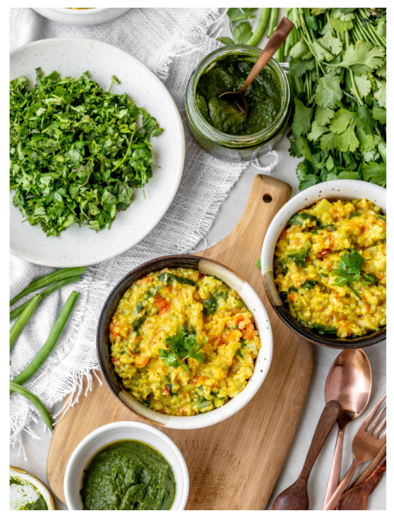

Ingredients
- 3⁄4 cup soaked brown rice
- 6 cups water
- 1 cup finely chopped green beans
- 1 cup grated carrot
- 1 cup grated bottle guard
- 1 teaspoon turmeric powder
- 1 cup finely chopped spinach
- 2 small green chillies, finely crushed
- 1 cup chopped tomato
- 1⁄2 cup coconut kernel, sliced and then blended in a blender
- 2 teaspoons rock salt
- 1⁄2 cup chopped coriander
Pre-preparation
Soak brown rice in water for about 3 hours.
Method
- In a pot, place the brown rice along with 6 cups of water. Let it cook on a low flame till it turns soft (about 45 minutes). Keep stirring in between.
- Add the beans, carrots, bottle guard and turmeric and cook for another 15 minutes. Add more water if required.
- Add the spinach and green chillies. Stir well and cook for another 5 minutes.
- Turn off the stove. Add the tomatoes, coconut and salt. Keep the pot covered for 5 minutes.
- Top with coriander and serve with green chutney.
Note: Do not re-heat sabzi after adding gravy. Coconut & tomatoes should never be cooked.
Return to top
Return to main page